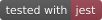

🃏 Delightful JavaScript Testing
👩🏻💻 Developer Ready: A comprehensive JavaScript testing solution. Works out of the box for most JavaScript projects.
🏃🏽 Instant Feedback: Fast, interactive watch mode only runs test files related to changed files.
📸 Snapshot Testing: Capture snapshots of large objects to simplify testing and to analyze how they change over time.
See more on jestjs.io
Table of Contents
- Getting Started
- Running from command line
- Additional Configuration
- Documentation
- Badge
- Contributing
- Credits
- License
- Copyright
Getting Started
Install Jest using yarn:
yarn add --dev jest
Or npm:
npm install --save-dev jest
Note: Jest documentation uses yarn commands, but npm will also work. You can compare yarn and npm commands in the yarn docs, here.
Let’s get started by writing a test for a hypothetical function that adds two numbers. First, create a sum.js file:
function sum(a, b) {
return a + b;
}
module.exports = sum;
Then, create a file named sum.test.js. This will contain our actual test:
const sum = require('./sum');
test('adds 1 + 2 to equal 3', () => {
expect(sum(1, 2)).toBe(3);
});
Add the following section to your package.json:
{
"scripts": {
"test": "jest"
}
}
Finally, run yarn test or npm test and Jest will print this message:
PASS ./sum.test.js
✓ adds 1 + 2 to equal 3 (5ms)
You just successfully wrote your first test using Jest!
This test used expect and toBe to test that two values were exactly identical. To learn about the other things that Jest can test, see Using Matchers.
Running from command line
You can run Jest directly from the CLI (if it’s globally available in your PATH, e.g. by yarn global add jest or npm install jest --global) with a variety of useful options.
Here’s how to run Jest on files matching my-test, using config.json as a configuration file and display a native OS notification after the run:
jest my-test --notify --config=config.json
If you’d like to learn more about running jest through the command line, take a look at the Jest CLI Options page.
Additional Configuration
Generate a basic configuration file
Based on your project, Jest will ask you a few questions and will create a basic configuration file with a short description for each option:
yarn create jest
Using Babel
To use Babel, install required dependencies via yarn:
yarn add --dev babel-jest @babel/core @babel/preset-env
Configure Babel to target your current version of Node by creating a babel.config.js file in the root of your project:
// babel.config.js
module.exports = {
presets: [['@babel/preset-env', {targets: {node: 'current'}}]],
};
The ideal configuration for Babel will depend on your project. See Babel’s docs for more details.
Making your Babel config jest-aware
Jest will set `process.env.NODE_ENV` to `'test'` if it's not set to something else. You can use that in your configuration to conditionally setup only the compilation needed for Jest, e.g. ```javascript // babel.config.js module.exports = api => { const isTest = api.env('test'); // You can use isTest to determine what presets and plugins to use. return { // ... }; }; ``` > Note: `babel-jest` is automatically installed when installing Jest and will automatically transform files if a babel configuration exists in your project. To avoid this behavior, you can explicitly reset the `transform` configuration option: ```javascript // jest.config.js module.exports = { transform: {}, }; ```Using webpack
Jest can be used in projects that use webpack to manage assets, styles, and compilation. webpack does offer some unique challenges over other tools. Refer to the webpack guide to get started.
Using Vite
Jest can be used in projects that use vite to serves source code over native ESM to provide some frontend tooling, vite is an opinionated tool and does offer some out-of-the box workflows. Jest is not fully supported by vite due to how the plugin system from vite works, but there is some working examples for first-class jest integration using the vite-jest, since this is not fully supported, you might as well read the limitation of the vite-jest. Refer to the vite guide to get started.
Using Parcel
Jest can be used in projects that use parcel-bundler to manage assets, styles, and compilation similar to webpack. Parcel requires zero configuration. Refer to the official docs to get started.
Using TypeScript
Jest supports TypeScript, via Babel. First, make sure you followed the instructions on using Babel above. Next, install the @babel/preset-typescript via yarn:
yarn add --dev @babel/preset-typescript
Then add @babel/preset-typescript to the list of presets in your babel.config.js.
// babel.config.js
module.exports = {
presets: [
['@babel/preset-env', {targets: {node: 'current'}}],
+ '@babel/preset-typescript',
],
};
However, there are some caveats to using TypeScript with Babel. Because TypeScript support in Babel is purely transpilation, Jest will not type-check your tests as they are run. If you want that, you can use ts-jest instead, or just run the TypeScript compiler tsc separately (or as part of your build process).
Documentation
Learn more about using Jest on the official site!
Badge
Show the world you’re using Jest →
[](https://github.com/jestjs/jest)
[](https://github.com/jestjs/jest)
[](https://github.com/jestjs/jest)
Contributing
Development of Jest happens in the open on GitHub, and we are grateful to the community for contributing bugfixes and improvements. Read below to learn how you can take part in improving Jest.
Code of Conduct
Facebook has adopted a Code of Conduct that we expect project participants to adhere to. Please read the full text so that you can understand what actions will and will not be tolerated.
Contributing Guide
Read our contributing guide to learn about our development process, how to propose bugfixes and improvements, and how to build and test your changes to Jest.
Good First Issues
To help you get your feet wet and get you familiar with our contribution process, we have a list of good first issues that contain bugs which have a relatively limited scope. This is a great place to get started.
Credits
This project exists thanks to all the people who contribute.

Backers
Thank you to all our backers! 🙏

Sponsors
Support this project by becoming a sponsor. Your logo will show up here with a link to your website.


License
Jest is MIT licensed.
Copyright
Copyright Contributors to the Jest project.